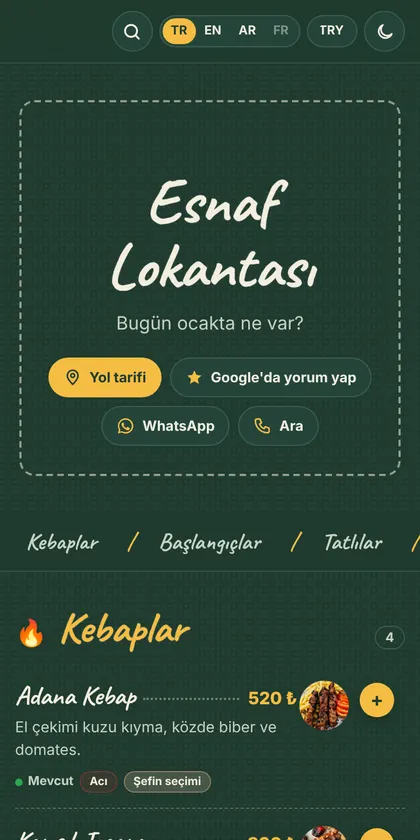

Hazır sipariş mesajı
Ürün, adet, toplam ve masa notu tek mesajda.
AuraMenu'de misafir ürünleri sepete ekler, adet ve not yazar, tek dokunuşla siparişi senin WhatsApp numarana gönderir. Mesaj hazır biçimde gelir: ürünler, adetler, toplam ve masa notu.

Ürün, adet, toplam ve masa notu tek mesajda.
Sipariş doğrudan sana gelir; aracı platform yok.
Tükenen ürün sepete eklenemez.
Hayır. Misafirin telefonundaki WhatsApp açılır ve sipariş mesajı hazır gelir; sen normal bir mesaj gibi yanıtlarsın.
Hayır. AuraMenu sabit plan ücretiyle çalışır; siparişler doğrudan sana gelir.